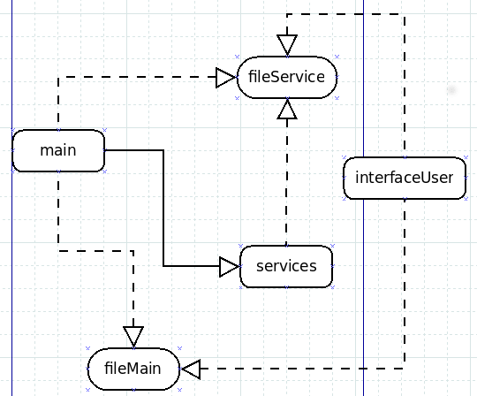
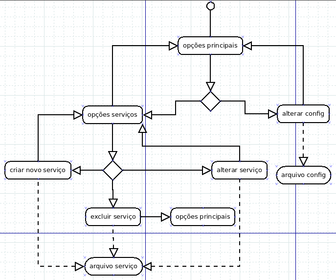
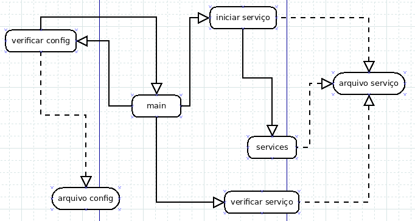

Primeira etapa - Esboço
Um esboço do projeto
Meu primeiro esboço se resume a um diagrama que apresenta as entidades que trabalhei e suas interações entre si e com os seus dados.
Como pode ser visto, a entidade "interface" não possui comunicação direta com as demais entidades, ela apenas manipula os dados dos serviços que estão salvos em disco. Os dados dos serviços são gerenciados pela "interface" e manipulados pelo "services" e pela função "main".
A função "main" é o alicerce dessa aplicação, ela está sempre em execução e é responsável por checar os serviços e seus estados, executando cada serviço em uma thread independente, se o serviço estiver em estado de "running". O termo "running" determina o estado ativo do serviço, assim como "stop" determina sua interrupção. O estado "wait" é especial, pois nesse estado o serviço estará ativo mais não está sendo executado.
Os serviços são iniciados pela função "main" em diferentes threds, cada thread é independente da outra e cada serviço se autogerencia enquando "main" estiver em execução.
No diagrama da Figura 2. temos um detalhamento de como a "interface" funciona. Com a ela é possível gerenciar os dados dos serviços criados. Ou seja, é possível criar, deletar e alterar as definições de cada serviço ou interromper a função "main" parando todos os serviços.
Reescrevi esse diagrama algumas vezes tentando imaginar a melhor maneira de interação entre a função "main" e a entidade "services". Neste diagrama, proponho que quando a função "main" for iniciada, ela acessará os dados de cada serviço e iniciará aquele que estive em estado "running" ou "wait".
O diagrama ainda mostra que os serviços não se comunicam com a função "main". Quando um serviço é iniciado ele fica acessando seus dados gravados em disco, verificando se alguma alteração foi feita.
Através desses diagramas foi possível ter uma ideia de como o programa funcionaria e como deveria ser implementado.